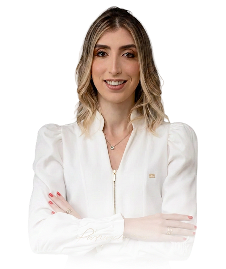
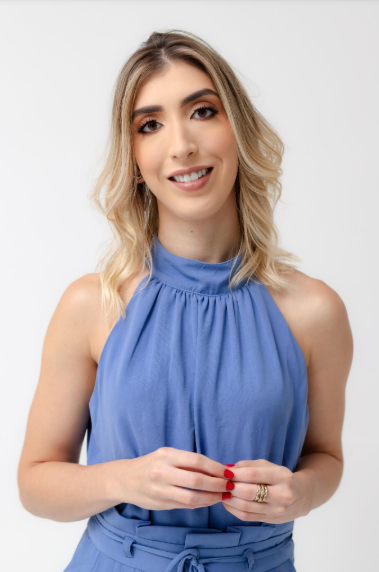
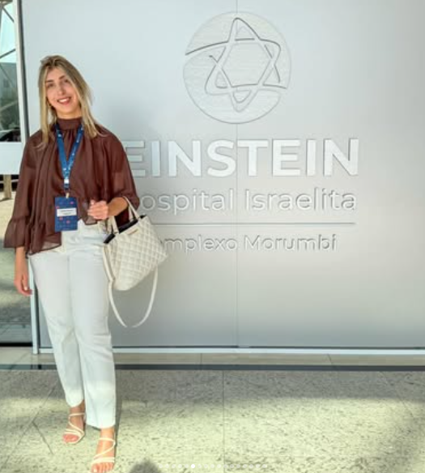
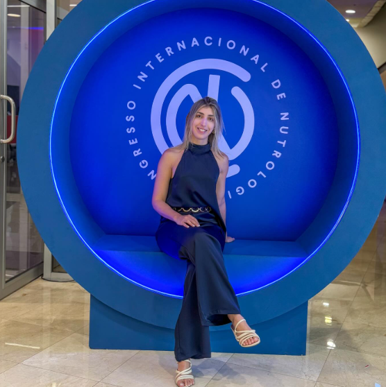

Emagrecimento com estratégia e ciência. Um acompanhamento médico individualizado para transformar sua saúde de dentro para fora.


Sou a Dra. Aléxia Couto, médica mineira, de Belo Horizonte, com 31 anos e uma missão clara: ajudar você a emagrecer e viver melhor com base no que a ciência tem de mais atual.
Sou pós-graduada em Nutrologia pelo Hospital Israelita Albert Einstein e em Nutrologia Esportiva pela ABRAN, com atuação dedicada ao emagrecimento estratégico e à saúde intestinal.
Hoje atendo em Florianópolis, unindo acolhimento e rigor científico em consultas que enxergam você por inteiro — histórico, rotina, exames e objetivos.
CRM 39863
O acompanhamento nutrológico é indicado para quem busca resultados duradouros, com saúde e sem radicalismos.
Sobrepeso e obesidade tratados com estratégia individualizada, farmacologia quando indicada e acompanhamento próximo — sem dietas milagrosas.
Distensão, constipação, disbiose e desconfortos digestivos que impactam energia, imunidade e até o peso.
Performance, composição corporal e recuperação para quem treina — do iniciante ao atleta.
Resistência insulínica, pré-diabetes, colesterol alterado e outras condições que pedem cuidado antes que se agravem.
Investigação de carências nutricionais, sono e hábitos que roubam sua disposição no dia a dia.
Construção de uma relação leve e sustentável com a comida, respeitando sua rotina e suas preferências.
Emagrecer não é uma questão de disciplina, e sim de fisiologia. A obesidade é uma doença crônica, multifatorial — e tratá-la exige método, não culpa.
No consultório, cada plano nasce da sua história: exames completos, avaliação da composição corporal, análise da saúde intestinal e do seu estilo de vida real.


Pela primeira vez emagreci sem passar fome e sem terrorismo nutricional. A Dra. Aléxia explica tudo, e isso muda a forma como a gente se cuida.
Descobri que meu intestino era o vilão da minha energia. Depois do tratamento, o inchaço sumiu e a balança finalmente respondeu.
Atendimento humano de verdade. Ela olha exame por exame, ajusta o plano à minha rotina de treinos e acompanha de perto. Recomendo demais.
Dê o primeiro passo para um emagrecimento com estratégia, ciência e acompanhamento de verdade. As agendas são limitadas para garantir um cuidado próximo.
Quero agendar agoraFlorianópolis · SC